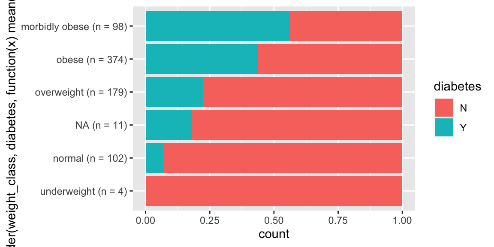

R/rename_with_counts.R
rename_with_counts.Rd`rename_with_counts` concatenates the count of each category to its category name given a specific variable. It can be useful in plots and tables to display the fequency of categories of a variable (see the example below).
rename_with_counts(d, variable_name)
| d | a tibble or dataframe |
|---|---|
| variable_name | the column with counts wanted |
a tibble with the counts appended to the `variable_name` column
rename_with_counts(pima_diabetes, weight_class)#> # A tibble: 768 x 10 #> patient_id pregnancies plasma_glucose diastolic_bp skinfold insulin #> <int> <int> <int> <int> <int> <int> #> 1 1 6 148 72 35 NA #> 2 2 1 85 66 29 NA #> 3 3 8 183 64 NA NA #> 4 4 1 89 66 23 94 #> 5 5 0 137 40 35 168 #> 6 6 5 116 74 NA NA #> 7 7 3 78 50 32 88 #> 8 8 10 115 NA NA NA #> 9 9 2 197 70 45 543 #> 10 10 8 125 96 NA NA #> # … with 758 more rows, and 4 more variables: weight_class <chr>, #> # pedigree <dbl>, age <int>, diabetes <chr># Below is an example of how `rename_with_counts` can be helpful when # creating plots and tables. This graph shows the outcomes of different # weight classes in `pima_diabetes`. With the added information from # `rename_with_counts`, we can see how common each category is. library(ggplot2) rename_with_counts(pima_diabetes, weight_class) %>% ggplot(aes(x = reorder(weight_class, diabetes, function(x) mean(x == "Y")), fill = diabetes)) + geom_bar(position = "fill") + coord_flip()